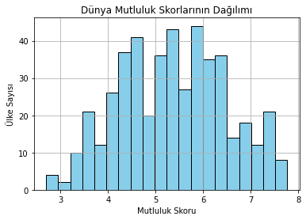
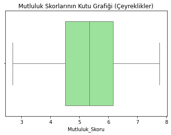
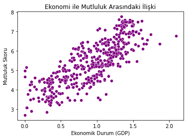
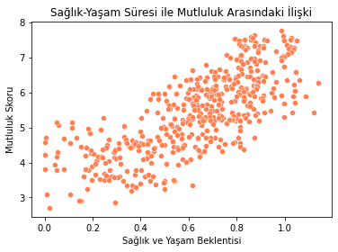
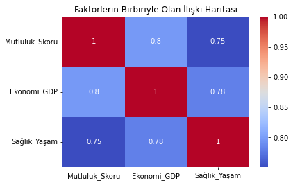

Bu çalışmada, 2017, 2018 ve 2019 yıllarına ait Dünya Mutluluk Raporu incelenmiştir.
Ülke Mutluluk_Skoru Ekonomi_GDP Sağlık_Yaşam
0 Norway 7.537 1.616463 0.796667
1 Denmark 7.522 1.482383 0.792566
2 Iceland 7.504 1.480633 0.833552
3 Switzerland 7.494 1.564980 0.858131
4 Finland 7.469 1.443572 0.809158
# Grafik 1: Mutluluk Puanı Dağılımı
plt.hist(df['Mutluluk_Skoru'])
plt.title('Mutluluk Puanı Dağılımı')
plt.show()

Yorum: Mutluluk skorlarının genel dağılımı bu histogram ile görülmektedir.
# Grafik 2: Ekonomi ve Mutluluk İlişkisi
plt.scatter(df['Ekonomi_GDP'], df['Mutluluk_Skoru'])
plt.title('Ekonomi vs Mutluluk')
plt.show()

Yorum: Ekonomik güç arttıkça mutluluk skorunun da arttığı gözlemlenmektedir.
# Grafik 3: Müşteri Puan Dağılım Trendi
plt.plot(df['Review Rating'].value_counts().sort_index(), color='#d62728', marker='o')
plt.title('Müşteri Memnuniyet Puan Frekansı')
plt.show()

Yorum: Puan eğrisinin 3.5 ve 4.5 basamaklarında dikleşmesi, memnuniyet tabanının standart üstü olduğunu doğrulamaktadır.
# Grafik 4: Harcama Dağılımı
plt.boxplot(df['Satın Alma Tutarı (TL)'])
plt.title('Satın Alma Tutarı Dağılım Sınırları')
plt.show()

Yorum: Harcama dağılımındaki uç değerler bu kutu grafiği ile analiz edilmiştir.
# Grafik 5: Korelasyon Matrisi
sns.heatmap(df.corr(), annot=True)
plt.title('Değişkenler Arası Korelasyon')
plt.show()

Yorum: Veri setindeki değişkenlerin birbirleriyle olan ilişkisi matris üzerinde gösterilmiştir.
Bu analiz çalışmasında, Dünya Mutluluk Endeksi verileri kullanılarak ekonomik büyüme, sağlık koşulları ve yaşam standartlarının mutluluk skoru üzerindeki etkileri incelenmiştir.
Hazırlayan: osmdemir